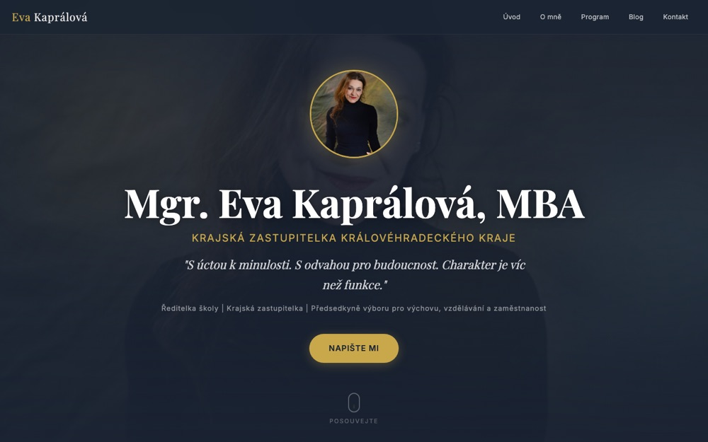
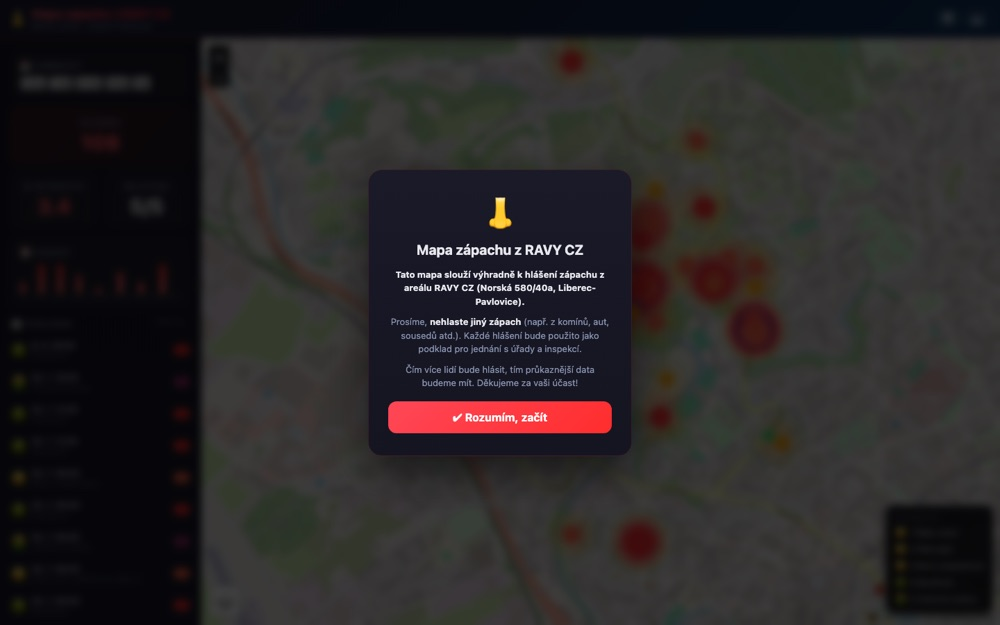
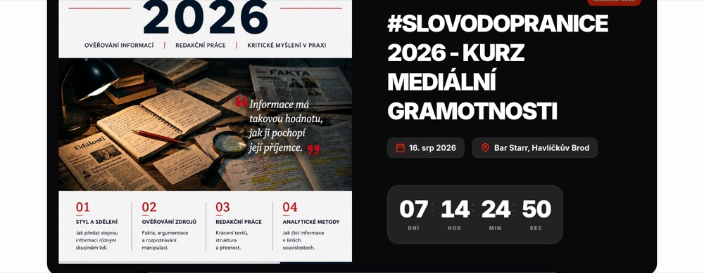

Tvorba webových stránek na míru v Liberci a okolí. Web, obsah, SEO a viditelnost v AI — bez agenturní mlhy.
Postavím web od nuly, přesně podle toho, co potřebujete. Nejdřív si popovídáme, pak teprve kódím. Žádné šablony, žádné „tohle by se vám mohlo líbit".
14 900–24 500 Kč · hotovo za 7 dní až 3 týdnyPíšu a plánuju příspěvky za vás, vy se věnujete práci. Profil žije, vy nemusíte.
4 900–7 500 Kč/měsícAktualizace, zálohy, drobné opravy. Aby vám web nespadl zrovna ve chvíli, kdy ho potřebujete.
1 900 Kč/měsícLidi se dnes ptají ChatGPT, koho si vybrat. Upravím web tak, aby AI lépe rozuměla, kdo jste a co děláte — a měla vás z čeho doporučit.
3 900–6 500 KčOpakující se práce, kterou děláte ručně. Necháme to běžet za vás.
individuálněNafotím vaši provozovnu, vás a vaši práci. Žádné stock fotky — web, který vypadá jako vy, buduje důvěru.
3 900–5 900 Kč
Krajská zastupitelka, ředitelka školy, aktivní kampaň. Web s administrací, blog, správa sítí a digitální podpora.
evakapralova.cz →
Mapování zápachu z výrobního areálu — lidé se zapojují, data jdou za úřady. Propojení občanů, radnice a SVJ.
liberec.online →
Akce, debaty a besedy s profily osobností, časovou osou, galerií a sdílením na sítě.
kalendar-alternativy.cz →Kampaňový web pro komunální volby 2026.
projablonec.cz (připravuje se)Web pro kostelnici. Stál míň než nové varhany.
Celý život se pohybuju mezi lidmi a technikou. Dělám weby, sítě a automatizace pro lidi, kteří nemají čas ani chuť řešit, jak to celé funguje — chtějí, aby to prostě fungovalo.
Nejsem agentura. Nevoláte do call centra, nikdo vás nepřepojuje mezi odděleními. Jsem jeden člověk, kterému na vašem webu záleží, protože je na něm moje jméno.
Občas to stojí víc času, než jsem plánoval. Občas si říkám, že jsem si mohl vybrat jednodušší práci. Ale když web běží a klient je spokojený, tak to za to stojí. To jsem zase já.
Liberec a okolí. Osobně, nebo online — jak vám to vyhovuje.
| Služba | Co dostanete | Cena |
|---|---|---|
| Jednostránkový web | Návrh, texty, tvorba, nasazení | od 14 900 Kč |
| Web na míru (3–5 stránek) | Návrh, texty, tvorba, nasazení, zaškolení | od 18 500 Kč |
| Web pro profesionály (5–7 stránek) | Vše výše + struktura, SEO základy | od 24 500 Kč |
| Správa sociálních sítí | 8–12 příspěvků měsíčně + grafika + reporting | od 4 900 Kč/měs. |
| Údržba webu | Aktualizace, zálohy, drobné úpravy, dohled | od 1 900 Kč/měs. |
| Viditelnost v AI (GEO) | Audit + úprava webu, aby mu AI chatboty lépe rozuměly a měly vás z čeho doporučit | od 3 900 Kč |
| Automatizace | Analýza, návrh, implementace, dokumentace | individuálně |
| Firemní focení | Provozovna + portrét + produkt, 20–60 upravených fotek, licence na web a sítě | 3 900–5 900 Kč |
| Web + focení (balíček) | Web na míru + focení provozovny a portrétu — vše od jednoho člověka | od 17 800 Kč (sleva 1 000 Kč) |
Ceny jsou konečné — nejsem plátce DPH, takže se k nim nic nepřičítá. Konkrétní nabídku připravím zdarma po krátké konzultaci — řekněte, co potřebujete, a já řeknu, kolik to stojí a za jak dlouho to bude.
Reálné ceny, co je ovlivňuje a proč „levný web" stojí nejvíc.
Přečíst článek →Povinné údaje dle ČAK, co nesmí a jak přináší klienty.
Přečíst článek →Jak AI vybírá firmy a proč vás ChatGPT možná nedoporučí.
Přečíst článek →Proč web makléře vydělává a jak proměnit návštěvníky v poptávky.
Přečíst článek →Proč Facebook nestačí a jak vás najdou místní (i přes AI).
Přečíst článek →Osobní značka, která přežije volby. Web za 5 dní (case study).
Přečíst článek →Jak získat zákazníky, kteří tě hledají. Know-how z prostředí.
Přečíst článek →Proč to nejde dělat „když zbude čas" a kolik to stojí.
Přečíst článek →Zjistěte za 15 minut, co z vašeho webu vidí AI.
Přečíst článek →8 otázek, než někomu svěříte web. Kontrolní seznam.
Přečíst článek →Menu online, rezervace, fotky. Instagram nestačí.
Přečíst článek →5 pravidel pro necopywritery. Příklady před a po.
Přečíst článek →AI i zákazníci poznají univerzální obrázky. Jak vypadat věrohodně.
Přečíst článek →Jednostránkový web od 14 900 Kč, web na míru (3–5 stránek) od 18 500 Kč a web pro profesionály (5–7 stránek) od 24 500 Kč. Ceny jsou konečné — nejsem plátce DPH, takže se k nim nic nepřičítá.
Jednostránkový web za 7–10 dní, menší web do 2 týdnů, rozsáhlejší do 3 týdnů. Už jsem dodal web za 5 dní.
Lidé se dnes ptají ChatGPT a jiných AI chatbotů, koho si vybrat. GEO (Generative Engine Optimization) upraví web tak, aby ho AI správně pochopila a doporučovala — strukturovaná data, čitelný obsah, metadata.
Nejdřív si nezávazně popovídáme o tom, co potřebujete, a připravím konkrétní nabídku zdarma. Po odsouhlasení web postavím, nasadím a zaškolím vás.
Působím v Liberci a okolí, ale pracuji i online pro klienty z celé České republiky.
Ano — nafotím provozovnu, portrét nebo produkt přímo pro váš web a sociální sítě. Firemní focení stojí 3 900–5 900 Kč, v balíčku s webem dostanete slevu 1 000 Kč. Fotky jsou v ceně upravené a s licencí na web i sítě.
Klidně přes telefon, klidně osobně. Když si nesedneme, nic se neděje — aspoň budete vědět, na co se ptát dál.